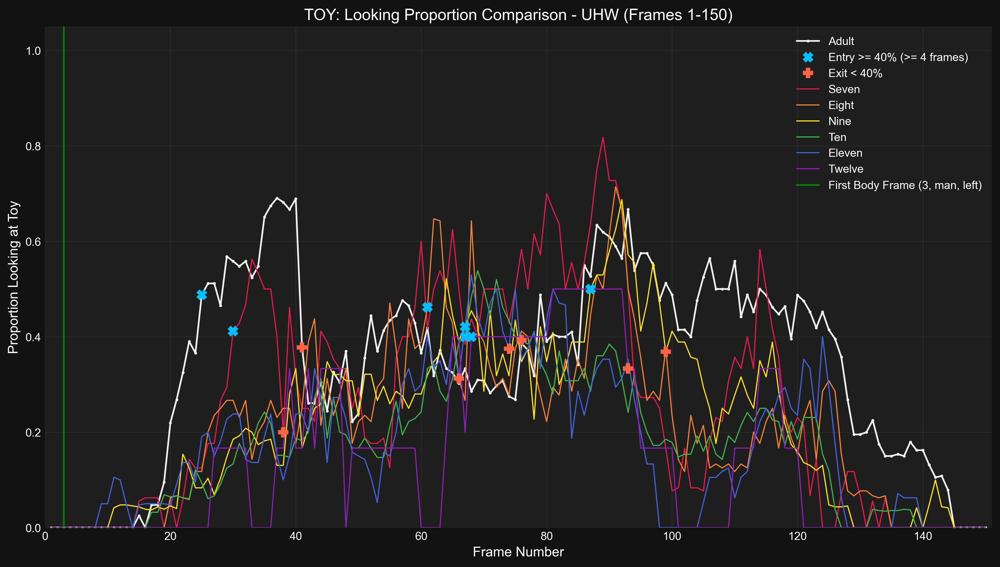
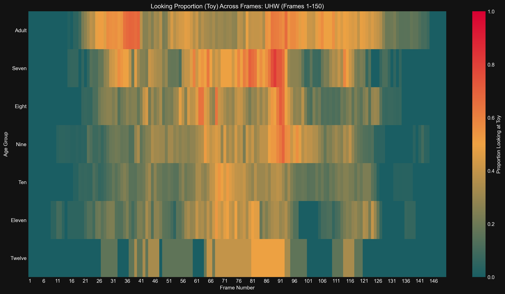

Generated: 2025-04-24 17:38:38
Time series of proportion looking at Toy for Adult
Results (Adult):- Entry (≥40%, ≤F75): Frame 25- Exit (<40%): Frame 41- Duration (≥40%): 16 frames- Latency (from body frame): 22 frames
Time series of proportion looking at Toy for Seven
Results (Seven):- Entry (≥40%, ≤F75): Frame 30- Exit (<40%): Frame 40- Duration (≥40%): 10 frames- Latency (from body frame): 27 frames
Time series of proportion looking at Toy for Eight
Results (Eight):- Entry (≥40%, ≤F75): Frame 61- Exit (<40%): Frame 70- Duration (≥40%): 9 frames- Latency (from body frame): 58 frames
Time series of proportion looking at Toy for Nine
Results (Nine):- Entry (≥40%): Frame 87 (Occurred after F75, not included in duration/latency calculations)
Time series of proportion looking at Toy for Ten
Results (Ten):- Entry (≥40%, ≤F75): Frame 67- Exit (<40%): Frame 79- Duration (≥40%): 12 frames- Latency (from body frame): 64 frames
Time series of proportion looking at Toy for Eleven
Results (Eleven):- Entry (≥40%, ≤F75): Frame 67- Exit (<40%): Frame 84- Duration (≥40%): 17 frames- Latency (from body frame): 64 frames
Time series of proportion looking at Toy for Twelve
Results (Twelve):- Entry (≥40%, ≤F75): Frame 68- Exit (<40%): Frame 93- Duration (≥40%): 25 frames- Latency (from body frame): 65 frames
Detailed time series comparing proportion looking at Toy across age groups.
Bar plot showing latency from body frame to >=40% entry (entry <= F75) looking at Toy for uhw
Results (Latency in Frames, 0 if no valid entry ≤F75): seven: 27, eight: 58, nine: 0, ten: 64, eleven: 64, twelve: 65, adult: 22
Bar plot showing duration >= 40% (entry <= F75) looking at Toy for uhw
Results (Duration in Frames, 0 if no valid entry ≤F75): seven: 10, eight: 9, nine: 0, ten: 12, eleven: 17, twelve: 25, adult: 16
Bar chart comparing mean proportion looking at Toy across age groups.
Results (Mean Proportion): Seven: 0.260, Eight: 0.211, Nine: 0.219, Ten: 0.172, Eleven: 0.176, Twelve: 0.148, Adult: 0.337
Heatmap showing proportion looking at Toy across frames and age groups.
